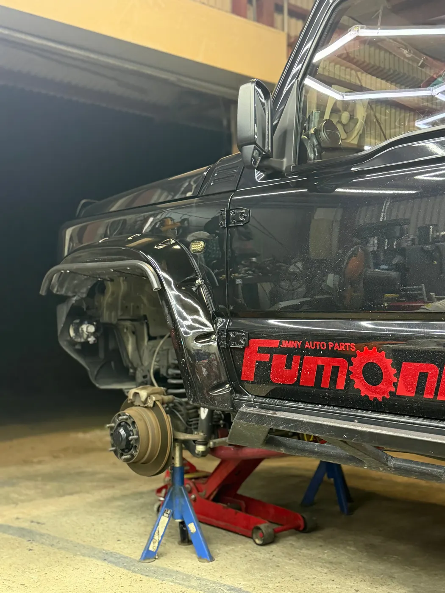

WORK 06
JB64 ハンドルセンター調整・サイドスリップ測定
/ 作業事例
足回り調整記録 // JB64

「ハンドルが右に取られる気がする」「まっすぐ走っているのに、ハンドルのセンターが少し左を向いている」というご相談のJB64ジムニーです。
まずはサイドスリップとトーを測定。結果はトーイン1.1mmで、こちらは問題ありませんでした。 足回りの数値は正常だったので、ハンドルのセンター位置を調整。何度か修正を重ねて、まっすぐの状態に合わせ込みました。
リフトアップ車や、タイヤ・足回りパーツを替えたあとは、ハンドルのセンターがずれやすくなります。 「なんとなく変だな」と感じたら、まず測定して、アライメント調整が必要なのか、センター合わせだけで済むのかを確認するのがおすすめです。
- 症状の確認（右に取られる・センターが左寄り）
- サイドスリップ・トー測定：トーイン1.1mm で問題なし
- ハンドルのセンター位置を調整
- 何度か修正を重ねて完了
Nova_83LAB にご依頼いただいた方へ。よろしければ Googleのクチコミ で感想をお聞かせください。